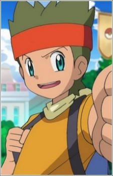
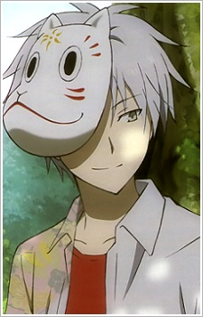
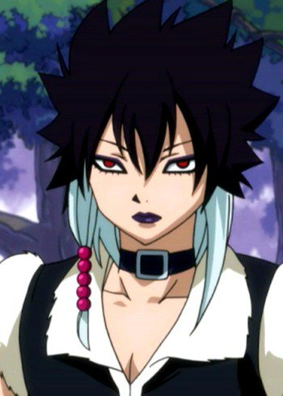
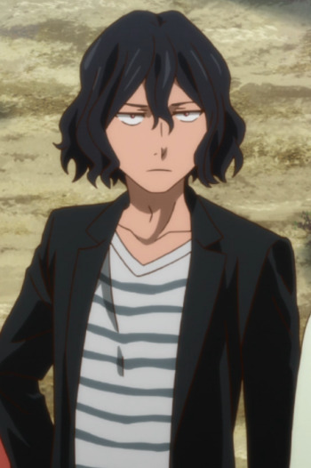

|  |
Cameron |
- Pokemon Black and White: Rival Destinies
|
Cameron is a Pokemon Trainer from the Unova region and Ash's rival. Cameron is an energetic boy who moves at a face pace. He is always eager to train but he has a horrible time keeping up with everything. He likes to take risks during battles and has a habit hurting himself with his headband. |
|  |
Gin |
- To The Forest of Firefly Lights
|
Gin is a spirit of the forest. He has a very naive personality, mostly because he never had any kind of relationship besides the forest spirits and Hotaru. He is cursed with a special ability where if he touch a human, he disappears. |
|  |
Midnight |
- Fairy Tail
- Fairy Tail (2014)
- Fairy Tail: Final Season
|
Midnight or Macbeth is a member of the Oracion Seis and Crime Sorciere. Macbeth is extremely laid back individual, often sleeping on magic carpet. He is extremely sadistic and sometimes ruthless. Macbeth values his freedom very much and is willing to go to great lengths for it. |
|  |
Ruth |
- The Ancient Magus' Bride: Those Awaiting a Star
- The Ancient Magus' Bride
|
Ruth is Chise's familiar, a Church Grim. He shares a mental link with Chise and considers her a sister. He cares for very much Chise and acts like a mother. |
 |
Shirou Kotomine |
|
Shirou Kotomine is the master of Red Assassin. Shirou was dispatched by the Church as one of the Master of the Red Fraction. He is also a servant of Ruler class. He has hated to due to his past comrades and once hated everything. He wants a world where everyone is saved and happy. |
 |
Soul Evans |
- Soul Eater
- Soul Eater NOT!
|
Soul Evans is Maka Albarn's Death Scythe partner. His personality mostly consists of being cool. He is laid-back and nonchalant, the complete opposite of Maka. He skilled at playing the piano. |
 |
Yuri Plisetsky |
- Yuri!!! on Ice
- Yuri!!! on Ice: Welcome to The Madness
|
Yuri Plisetsky is a Russian competitive figure skater. He has won three consecutive junior world championships. Yuri is very ambitious and determined to become the best of the best in figure skating. He is short-tempered and very accustomed to yelling despite his looks. |